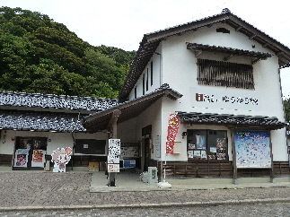

ゆうゆう館に車を駐車しました。
2013/07/21
温泉津温泉に行こうとネットを色々見たんですが、駐車場の場所がよくわかりませんでした。

駐車場が満車で止めれないと嫌なので、このゆうゆう館に車を停めて温泉まで歩いていくことにしました。
行きは登り坂なので少し疲れましたが、温泉に入った後の帰りは下り坂なので、快適に帰って来れました。
観光地の地図の確認もできるので、便利でした。
島根県大田市温泉津町温泉津イ791-4
2013/07/21
温泉津温泉に行こうとネットを色々見たんですが、駐車場の場所がよくわかりませんでした。

駐車場が満車で止めれないと嫌なので、このゆうゆう館に車を停めて温泉まで歩いていくことにしました。
行きは登り坂なので少し疲れましたが、温泉に入った後の帰りは下り坂なので、快適に帰って来れました。
観光地の地図の確認もできるので、便利でした。